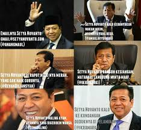
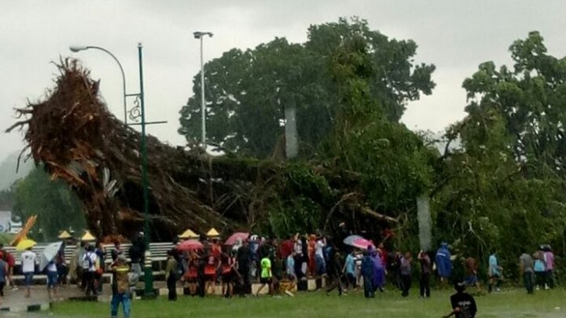

BERITA TERKINI
Setya Novanto
Jakarta
Kasus terkait korupsi e-KTP yang menyeret nama Setya Novanto belum juga berakhir. Bahkan belakangan ini Setya Novanto kembali jadi bulan-bulanan netter dijadikan meme di internet setelah dikabarkan sakit dan foto-fotonya tersebar. Sakitnya Setnov ini lantas dikaitkan dengan dugaan dirinya pura-pura demi bisa lolos dari kasus korupsi yang membelitnya itu. Tak tanggung-tanggung, meme yang beredar menyebut mulai dari Setnov yang kebal hukum, licin seperti belut, hingga komik soal "sakit palsu"-nya. Tak berhenti sampai di situ, kini meme lain beredar di dunia maya. Meme terbaru yang viral menyindir soal taktik dan "kehebatan" Setya Novanto yang mampu memenangkan sidang pra peradilan melawan KPK beberapa waktu lalu. Read More
Angin Ribut
Banjarnegara
Hujan Lebat Disertai Angin Kencang Sebabkan Pohon Tumbang, 1 Tewas dan 3 Luka Berat Hujan lebat disertai angin kencang telah menyebabkan pohon-pohon tumbang di wilayah Banjarnegara. Pohon Beringin besar di Alun-Alun Kota Banjarnegara tumbang pada Rabu (8/11/2017) pukul 13.00 Wib. Ijin melaporkan kejadian pohon tumbang. Read More